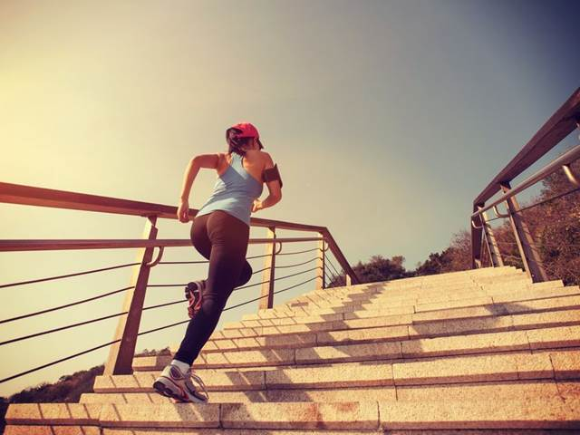
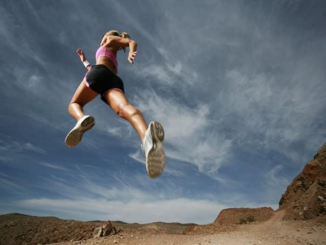
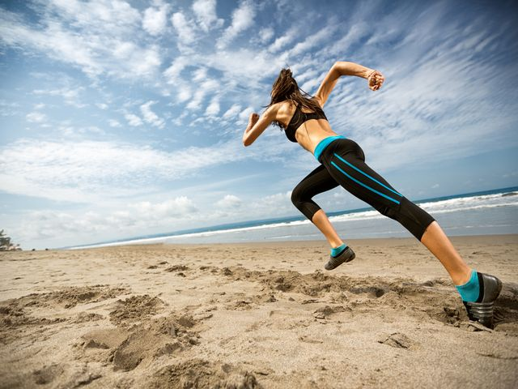
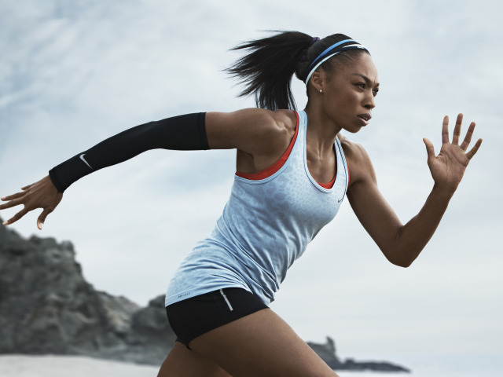
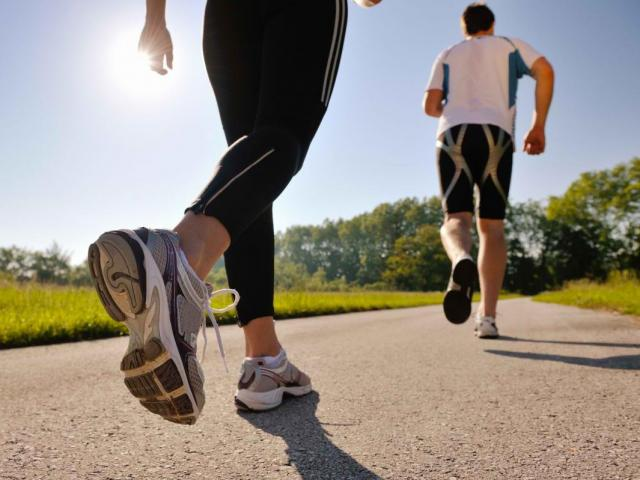

About site
Running is one of the most popular types of all sports disciplines. Jogging is practiced not only
by amateurs who want to get in shape and stay healthy, but also professionals. Running disciplines
are part of athletics and belong to the Olympic sport. There are differences in running between
amateur and professional sports. For those who want to benefit from this discipline, there are
guidelines for the technique and frequency of independent training.
There are many health and wellness benefits from jogging. Only with the correct running technique,
breathing, and a moderate heart rate can you benefit from training, otherwise you can do just as
much harm.
There are many health and wellness benefits from jogging. Only with the correct running technique,
breathing, and a moderate heart rate can you benefit from training, otherwise you can do just as
much harm.
There are many health and wellness benefits from jogging. Only with the correct running technique,
breathing, and a moderate heart rate can you benefit from training, otherwise you can do just as
much harm.
The main load during running falls on the leg muscles (soleus, calf), thigh muscles - the quadriceps
and biceps muscles, as well as the gluteal muscles. But you cannot judge running only by the
movement of the legs, the rest of the muscles also receive a sufficient load.
- Running strengthens the cardio-respiratory system - heart, blood vessels, improves
respiratory function and improves blood circulation.
- Tones up all muscles, organs and body systems.
Improves the function of the musculoskeletal system - strengthens bone tissue.
- Improves blood circulation in the pelvic organs - helps to improve sexual function.
- Saturates all cells with oxygen, improves overall physical and emotional well-being,
prevents stress, and enhances immune function.
Description

Running gait can be divided into two phases in regard to the lower extremity: stance and swing.
These can be further divided into absorption, propulsion, initial swing and terminal swing.
Due to the continuous nature of running gait, no certain point is assumed to be the beginning.
However, for simplicity, it will be assumed that absorption and footstrike mark the beginning of
the running cycle in a body already in motion.
Footstrike

Footstrike occurs when a plantar portion of the foot makes initial contact with the ground. Common footstrike
types include forefoot, midfoot and heel strike types. These are characterized by initial contact
of the ball of the foot, ball and heel of the foot simultaneously and heel of the foot respectively.
During this time the hip joint is undergoing extension from being in maximal flexion from the previous
swing phase. For proper force absorption, the knee joint should be flexed upon footstrike and the ankle
should be slightly in front of the body. Footstrike begins the absorption phase as forces from initial
contact are attenuated throughout the lower extremity. Absorption of forces continues as the body moves
from footstrike to midstance due to vertical propulsion from the toe-off during a previous gait cycle.
Midstance

Midstance is defined as the time at which the lower extremity limb of focus is in knee flexion directly
underneath the trunk, pelvis and hips. It is at this point that propulsion begins to occur as the hips
undergo hip extension, the knee joint undergoes extension and the ankle undergoes plantar flexion.
Propulsion continues until the leg is extended behind the body and toe off occurs. This involves maximal
hip extension, knee extension and plantar flexion for the subject, resulting in the body being pushed
forward from this motion and the ankle/foot leaves the ground as initial swing begins.
Propulsion phase

Most recent research, particularly regarding the footstrike debate, has focused solely on the absorption
phases for injury identification and prevention purposes. The propulsion phase of running involves the
movement beginning at midstance until toe off. From a full stride length model however, components
of the terminal swing and footstrike can aid in propulsion. Set up for propulsion begins at the end
of terminal swing as the hip joint flexes, creating the maximal range of motion for the hip extensors to
accelerate through and produce force. As the hip extensors change from reciporatory inhibitors to primary
muscle movers, the lower extremity is brought back toward the ground, although aided greatly by the stretch
reflex and gravity. Footstrike and absorption phases occur next with two types of outcomes. This phase
can be only a continuation of momentum from the stretch reflex reaction to hip flexion, gravity and light
hip extension with a heel strike, which does little to provide force absorption through the ankle joint.
With a mid/forefoot strike, loading of the gastro-soleus complex from shock absorption will
serve to aid in plantar flexion from midstance to toe-off. As the lower extremity enters midstance,
true propulsion begins. The hip extensors continue contracting along with help from the acceleration of
gravity and the stretch reflex left over from maximal hip flexion during the terminal swing phase. Hip
extension pulls the ground underneath the body, thereby pulling the runner forward. During midstance, the
knee should be in some degree of knee flexion due to elastic loading from the absorption and footstrike phases
to preserve forward momentum. The ankle joint is in dorsiflexion at this point underneath the body,
either elastically loaded from a mid/forefoot strike or preparing for stand-alone concentric plantar flexion.
All three joints perform the final propulsive movements during toe-off. The plantar flexors
plantar flex, pushing off from the ground and returning from dorsiflexion in midstance. This can either occur
by releasing the elastic load from an earlier mid/forefoot strike or concentrically contracting from a heel
strike. With a forefoot strike, both the ankle and knee joints will release their stored elastic energy from
the footstrike/absorption phase. The quadriceps group/knee extensors go into full knee extension,
pushing the body off of the ground. At the same time, the knee flexors and stretch reflex pull the knee back
into flexion, adding to a pulling motion on the ground and beginning the initial swing phase. The hip extensors
extend to maximum, adding the forces pulling and pushing off of the ground. The movement and momentum generated
by the hip extensors also contributes to knee flexion and the beginning of the initial swing phase.
Swing phase

Initial swing is the response of both stretch reflexes and concentric movements to the propulsion movements
of the body. Hip flexion and knee flexion occur beginning the return of the limb to the starting position and
setting up for another footstrike. Initial swing ends at midswing, when the limb is again directly underneath
the trunk, pelvis and hip with the knee joint flexed and hip flexion continuing. Terminal swing then begins as
hip flexion continues to the point of activation of the stretch reflex of the hip extensors. The knee begins
to extend slightly as it swings to the anterior portion of the body. The foot then makes contact with the
ground with footstrike, completing the running cycle of one side of the lower extremity. Each limb of the
lower extremity works opposite to the other. When one side is in toe-off/propulsion, the other hand is in
the swing/recovery phase preparing for footstrike. Following toe-off and the beginning of
the initial swing of one side, there is a flight phase where neither extremity is in contact with the
ground due to the opposite side finishing terminal swing. As the footstrike of the one hand occurs,
initial swing continues. The opposing limbs meet with one in midstance and midswing, beginning the propulsion
and terminal swing phases.